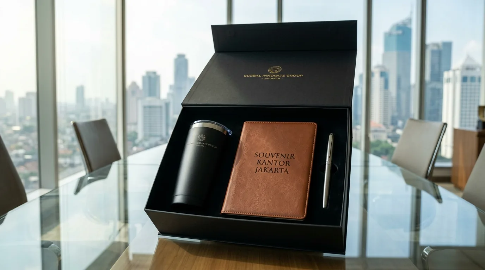

Paket Corporate Gift Klien, Karyawan & Relasi Bisnis
 Tim Redaksi Souvenir Kantor Jakarta
21 Agustus 2026
8 Menit Baca
Tim Redaksi Souvenir Kantor Jakarta
21 Agustus 2026
8 Menit Baca

Pemberian paket corporate gift terbukti memperkuat hubungan kemitraan B2B dan meningkatkan retensi loyalitas klien secara signifikan. Kombinasi produk fungsional seperti tumbler vakum, pouch kulit sintetis, dan gadget organizer memberikan nilai guna jangka panjang. Kustomisasi kemasan rigid box dengan cetak logo emboss emas atau perak meningkatkan citra profesionalitas instansi penyedia. Sentralisasi pengadaan terpadu di Jakarta memberikan jaminan presisi pengerjaan kustom, pengawasan mutu, dan kecepatan distribusi nasional.
Paket corporate gift adalah rangkaian produk merchandise premium custom terkurasi yang dikemas eksklusif untuk memberikan apresiasi bermakna kepada klien, karyawan, dan relasi bisnis.
- Apa Saja Rekomendasi Kombinasi Produk dalam Paket Corporate Gift untuk Relasi Bisnis?
- Mengapa Pengadaan Paket Corporate Gift Sangat Penting untuk Retensi Bisnis dan Karyawan?
- Bagaimana Strategi Mengemas Paket Corporate Gift Agar Terlihat Mewah dan Professional?
- Kesalahan Apa Saja yang Wajib Dihindari Saat Menyiapkan Paket Corporate Gift?
- Pertanyaan Umum Seputar Paket Corporate Gift (FAQ)
- Kesimpulan Praktis
Apa Saja Rekomendasi Kombinasi Produk dalam Paket Corporate Gift untuk Relasi Bisnis?
Rekomendasi kombinasi produk dalam paket corporate gift meliputi tumbler stainless steel insulasi suhu, notebook hardcover jilid kulit, pulpen metal grafir laser, dan powerbank nirkabel.
Mengalokasikan pengadaan cenderamata dalam bentuk set terpadu merupakan strategi efektif untuk memperkuat hubungan profesional instansi. Berdasarkan Laporan Tahunan Industri Merchandise & Corporate Gifting Indonesia 2025/2026, permintaan paket corporate gift untuk kategori kemitraan strategis meningkat sebesar 37% secara tahunan. Peningkatan ini didorong oleh kesadaran korporasi dalam menjaga hubungan jangka panjang dengan pemangku kepentingan (stakeholders).
- 1 Paket Eksekutif Client Appreciation
- 2 Paket Onboarding Karyawan Baru
- 3 Paket Kemitraan Relasi Bisnis
- 4 Paket Akhir Tahun Korporat
- 5 Paket VIP Event Guest
Paket Eksekutif Client Appreciation: Kombinasi tumbler vakum termal LED, pulpen besi grafir laser, dan kartu ucapan kustom dalam rigid box. Paket ini memberikan kesan eksklusif bagi klien utama.
Paket Onboarding Karyawan Baru: Perpaduan notebook jilid kulit PU, id card holder kustom, flashdisk logam, dan mug keramik coating. Sangat ideal untuk menyambut anggota tim baru.
Paket Kemitraan Relasi Bisnis: Set powerbank nirkabel, pouch organizer kulit sintetis, serta wireless speaker berukuran ringkas. Kombinasi ini sangat fungsional untuk mitra bisnis yang mobilitasnya tinggi.
Paket Akhir Tahun Korporat: Kombinasi agenda kerja tahunan, desk organizer kayu/akrilik, dan payung lipat otomatis anti-UV. Paket ini menjadi hadiah penutup tahun yang berkesan.
Paket VIP Event Guest: Bundel tempat kartu nama logam, tumbler mini eksklusif, dan pen drive yang dikemas rapi dengan pita satin. Memberikan pengalaman unboxing yang mewah bagi tamu VIP.

Mengapa Pengadaan Paket Corporate Gift Sangat Penting untuk Retensi Bisnis dan Karyawan?
Pengadaan paket corporate gift sangat penting karena meningkatkan retensi klien, memperkuat keterikatan kerja karyawan (employee engagement), serta membangun reputasi merek yang positif.
Retensi Klien
Meningkat hingga 42%Employee Engagement
Karyawan merasa diapresiasiReputasi Merek
Citra profesional yang positifDalam ekosistem bisnis modern, apresiasi nyata berupa cenderamata berkualitas tinggi menciptakan ikatan emosional yang kuat. Data Asosiasi Industri Merchandise Indonesia (AIMI) periode 2025/2026 menunjukkan bahwa perusahaan yang rutin memberikan cenderamata korporat mengalami peningkatan retensi klien hingga 42% dibandingkan yang tidak memberikan apresiasi. Produk yang fungsional memastikan identitas perusahaan selalu diingat dalam aktivitas harian penerima.
Bagi manajemen yang ingin menghadirkan impresi kemitraan yang elegan dan berkelas, pilihan bundel kustom dari Souvenir Kantor Jakarta siap memberikan solusi pengadaan terbaik dengan harga yang sangat bersaing.
Bagaimana Strategi Mengemas Paket Corporate Gift Agar Terlihat Mewah dan Professional?
Strategi mengemas paket corporate gift agar terlihat mewah adalah dengan menggunakan kemasan rigid box tebal, lapisan cetak logo foil emas atau perak, serta selipan busa pelindung (inlay foam).
Rigid Box Kustom
Kotak keras berbahan karton tebal berlapis kertas impor.
Inlay Busa Presisi
Die-cut foam menjaga barang tetap pada tempatnya.
Kartu Ucapan
Pesan apresiasi dari jajaran direksi.
Kemasan (packaging) luar memegang peranan hingga 50% dalam membentuk persepsi awal penerima terhadap bobot apresiasi perusahaan. Pengemasan yang cermat dan rapi akan membuat produk di dalamnya tampak jauh lebih bernilai.
- Gunakan Packaging Rigid Box Kustom: Kotak keras berbahan karton tebal berlapis kertas impor memberikan struktur kemasan yang sangat kokoh.
- Terapkan Inlay Busa Presisi: Penempatan setiap unit produk di dalam lekukan busa cetak (die-cut foam) menjaga barang tidak bergeser dan tersusun rapi.
- Sertakan Kartu Ucapan Apresiasi Personal: Sertakan greeting card berdesain elegan yang memuat pesan terima kasih langsung dari jajaran direksi perusahaan.
Untuk mengeksplorasi opsi perpaduan barang untuk acara seminar dan pelatihan, simak ulasan mendalam kami mengenai paket seminar kit corporate gift yang dirancang khusus untuk kenyamanan peserta acara.
Kesalahan Apa Saja yang Wajib Dihindari Saat Menyiapkan Paket Corporate Gift?
Kesalahan yang wajib dihindari adalah memesan tanpa verifikasi sampel fisik, memilih produk tanpa standar kualitas, serta mengabaikan durasi produksi massal.
Tanpa Sampel
Berisiko warna logo tidak sesuai identitas brand.
Kualitas Rendah
Produk mudah rusak menurunkan kepercayaan.
Pesanan Mendadak
Produksi massal butuh waktu QC yang cukup.
Meskipun pengadaan cenderamata bertujuan baik, ketidakcermatan dalam memilih barang dapat berdampak buruk pada persepsi penerima terhadap profesionalisme instansi:
- Tergesa-gesa Tanpa Pengecekan Sampel: Memulai cetak massal tanpa persetujuan sampel fisik berisiko menyebabkan ketidaksesuaian warna atau kejelasan logo.
- Memilih Produk yang Mudah Rusak: Membeli barang elektronik atau peralatan minum tanpa garansi dapat menurunkan kepercayaan klien apabila produk cepat rusak.
- Pemesanan Mendadak Dekat Hari H: Produksi jumlah besar membutuhkan durasi yang cukup untuk proses pengeringan cetakan, perakitan kotak, dan pengawasan kualitas.
Pastikan proses pengadaan perusahaan Anda berjalan lancar tanpa hambatan teknis dengan memercayakannya kepada Souvenir Kantor Jakarta yang memberikan garansi pengerjaan rapi dan ketepatan waktu pengiriman.
Pertanyaan Umum Seputar Paket Corporate Gift (FAQ)
Butuh Paket Corporate Gift Eksklusif?
Konsultasikan kebutuhan paket corporate gift eksklusif untuk klien dan karyawan Anda dengan tim kami untuk mendapatkan rekomendasi produk dan penawaran terbaik.
Konsultasi SekarangKesimpulan Praktis
Pengadaan paket corporate gift merupakan investasi strategis untuk memperkuat hubungan bisnis dan meningkatkan loyalitas karyawan. Dengan memilih kombinasi produk premium yang fungsional, pengerjaan kustomisasi logo yang presisi, serta pengemasan eksklusif yang elegan, setiap paket apresiasi yang Anda berikan akan menjadi cerminan nyata dari nilai dan komitmen perusahaan terhadap mitra dan tim internal. Segera wujudkan program apresiasi korporat yang berkesan dengan memesan paket corporate gift custom berkualitas tinggi hanya di Souvenir Kantor Jakarta sekarang juga.